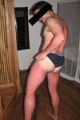

L'équipe
Beau gosse inside - Attention les yeux
Michaël

- La petite phrase : quel est le con qui a ramené des fleurs sur mon balcon ?
- Métier : développeur front-end ; spécialiste Eclipse
- Signe particulier : ne porte pas de lunettes après 21h en soirée ; un week-end tout compris à Berlin pour 50€ trop cher mon fils !
- Sports de haut niveau : roller hockeyeur retraité ; tennisman débutant mais assidu une fois par an
- Instant geek :
Guillaume (alias Pik)
- La petite phrase : qui est ce qui dort sur ma banquette encore ?
- Métier : développeur actionscript 3 pour les grands
- Signe particulier : des cheveux qui poussent vers le haut pas naturellement
- Sports de haut niveau : roller randonneur professionnel ; déquanilleur de petites norvégiennes ; JungleSpeed level +99
- Instant geek :
Benoit

- La petite phrase : le flash c'est une super technologie... pour faire des CD-Roms...
- Métier : développeur front-end, expert accessibilité
- Signe particulier : des poils sur les joues ; possède plus de t-shirts que de jours dans un mois (ultra développement durable)
- Sports de haut niveau : ceinture noire en pétanque ; maître Shaolin en belote
- Instant geek :
Clément
- La petite phrase : la meilleure heure pour se lever : encore dans 9 minutes
- Métier : développeur actionscript 3 ascendant gémaux
- Signe particulier : in Zôri we trust
- Sports de haut niveau : sieste 14 fois champion du monde toute catégorie
- Instant geek :